Training
Training repeats one step thousands of times: run the model on a batch of text, measure how wrong it was, work out which way every weight should move to be less wrong, and move them a little.
The loss
A language model scores every possible next token. Softmax turns those scores into probabilities:

The loss is the cross-entropy: the average, over every position, of how surprised the model was by the token that actually came next.

A model that knows nothing spreads its bets evenly over all V tokens, and so starts near
Every curve starts there. A loss of 0 would mean certainty about every next token, which no honest model reaches on real text. Losses are counted per character: a token's loss is shared among the characters it stands for, so a model that reads with a tokenizer compares fairly with one that reads by the character. For datasets, where only some positions have a right answer, the Core also measures accuracy: how often the top-scoring token is the right one.
Practice and test
The training loss is measured on the batches the model practises on, averaged over recent steps. The test loss is measured on examples practice never shows. When the two part ways, with training loss still falling while the test loss stalls or rises, the model is memorising its practice instead of learning what generalises. Models are judged on their tests alone.
The settings
Learning rate (LR). How far each step moves the weights. Too small and nothing happens for a long time; too large and the loss jumps around or explodes. The Core trains with AdamW, the optimizer most language models use. It scales each weight's step by the size of its recent gradients, so the learning rate sets the step size fairly directly:

with the usual β₁ = 0.9, β₂ = 0.999 and weight decay λ = 0.01 on weight matrices. The first 20 steps warm up from zero to the full learning rate.
Batch. How many sequences each step looks at. Bigger batches give a steadier gradient but cost more per step.
Clip. Gradient clipping caps the size of the whole gradient before the step:

It rescues the occasional huge gradient without changing ordinary steps. It does not rescue a learning rate that is too large on every step.
Speed. Watch trains slowly enough to follow the curve; Max trains as fast as the Core can.
Reading the curve
- Flat at the start, then a sudden drop: the model found a mechanism. Attention models often do this.
- Falling, then flattening above the goal: the model has learned all it can see. Give it more to work with: more context, more width, more layers.
- Jagged and climbing: the steps are too big. Lower the learning rate.
- Both losses suspiciously low: something lets the model see the answer. The Core flags a model that reads ahead.
Watching it learn
While a model trains, waves run through its blocks every two seconds. A teal pulse travels from the tokens to the loss, lighting each machine as the batch reaches it, as brightly as the values it puts out. Then an amber pulse runs back from the loss, lighting each machine as brightly as the gradient that reaches it. A machine that stays dark on the way back hardly learns: almost no gradient reaches it.
Above each machine floats its output for one example of practice: a bar per entry for a vector, a cell per entry for a matrix, amber above zero and blue below. An attention head shows its pattern instead, which earlier tokens each token looks at. Look at a hologram to read the value under your crosshair. Hold a Tensor Probe to see the holograms when nothing is training.
When training stops
Training stops when you press Stop or when a machine of the model changes. It also stops when the loss diverges: if it turns into NaN, or climbs far above where it started. A salvaged model adds a budget: a limited number of steps per run, after which you reset the weights and try again.
Reset throws the learned weights away so the next run starts fresh. Check reads the model again and reports any problem without training.